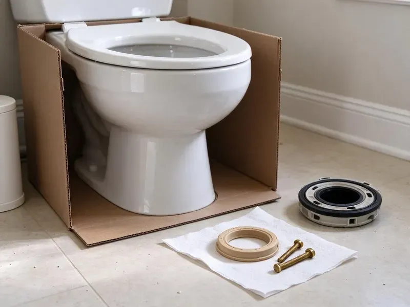

Bathtub Faucet Replacement in Rochester, NY
Tub faucet dripping all night in Rochester, NY? HCL Plumbing finds your valve model and replaces the part that failed.
- Moen, Delta and Kohler Parts
- Three-Handle Conversions
- Tub Wiped Before We Leave
- Anti-Scald Valves Only
Replace That Dripping Tub Faucet in Rochester, NY
You get a written price before we begin and a full hot and cold test at the end.
New Tub Faucets Installed in Rochester, NY
Some tub faucet jobs never touch the wall. Replacing a slip-on spout or a cartridge that fits the valve already in place takes an hour or two and costs far less than cutting into tile around the valve. We start with those options. Wall work comes only when the valve itself has failed.
Work we handle every week:
- Fit remodel plates over old handle holes
- Install access panels behind the tub
- Replace worn tub cartridges and compression stems

Additional Bathroom Plumbing Services in Rochester, NY
From toilets to showers, our bathroom plumbing team in Rochester, NY repairs, installs, and replaces every fixture with clean, code-compliant work.


Customers
Why Choose HCL Plumbing for Bathtub Faucet Replacement in Rochester, NY?
Pricing stays flat and written. One price covers parts, labor and any access panel, and it holds even if an old stem fights back. We do not bill by the hour.
- Scald Protection, Every new valve is pressure-balance or thermostatic and set with a limit stop.
- Tile Care, Access panels and remodel plates keep tile damage small.
- Right Parts, We identify the exact valve so the cartridge fits the first time.
Citywide Coverage
New construction and recent remodels are covered too. Newer valves often accept trim and cartridge swaps from the front, with no tile work. Those are fast visits.
Experienced Team
Brand training keeps us current. Moen, Delta and Kohler all change their valve lines every few years, and our plumbers take manufacturer classes and continuing education to keep up with new cartridges and rough-in bodies. Nothing on the job is new to them.
Safety-First Approach
New tub and shower valves must limit scalding under New York plumbing code. We install pressure-balance or thermostatic valves only, and we set the limit stop so the hottest water at the spout or head stays at or below the code maximum, usually 120 degrees. We check it with a thermometer.
Trusted Certified Rochester Plumbing Services Professionals
At HCL Plumbing, we are proud to offer certified plumbing services throughout Rochester, NY. Those papers on the wall mean something. Our plumbers hold recognized industry credentials, and they follow strict safety and quality rules on every repair, installation and maintenance call we run.
Call Us Now PHCC Plumbing Contractor Recognition
PHCC Plumbing Contractor Recognition Better Business Bureau (BBB) Accreditation
Better Business Bureau (BBB) Accreditation Angi Certified Pro
Angi Certified Pro ISO 9001 Quality Management Certification
ISO 9001 Quality Management CertificationTub Faucet Replacement Work in Rochester, NY
Moen Tub Faucet Replacement in Rochester
Moen Posi-Temp valves use the 1222 cartridge. A worn 1222 causes drips or weak hot water, and replacing it takes about an hour with a puller. Older Moentrol valves take another cartridge. We carry both.

Upgrading Tub Faucets in Rochester, NY
Plenty of people replace a working tub faucet for looks. A dated chrome cross-handle set can become a brushed nickel or matte black lever trim, and if the valve is a newer universal rough-in, the swap happens without opening the wall at all. We can match your sink finish. Delta and Moen make this simplest.
Diverter Valve Repair and Replacement in Rochester, NY
Water running from the spout during a shower means a failing diverter. On a single-handle setup the diverter is usually the lift gate in the spout itself, and on a three-handle faucet it is the middle stem, and both wear out until water splits between the spout and the head. Spout diverters are a quick swap. Middle stems need a seat too.
Thermostatic Tub Valve Installation in Rochester, NY
Thermostatic valves hold the temperature you set. They sense real water temperature, not just pressure, which helps kids and older adults avoid hot spikes. Many have separate heat and flow controls. They cost more than pressure-balance.
Tub Spout Replacement in Rochester
Spouts mount two ways. Slip-on spouts slide over a 1/2 inch copper stub and lock with a set screw underneath, while threaded spouts screw onto a 1/2 inch pipe nipple, and putting the wrong type on causes leaks behind the wall. The connection gets checked first. Diverter spouts must match too.
Hard Water Tub Faucet Replacement in Rochester
Water hardness in New York varies a lot, with many surface water supplies running soft and groundwater in some areas running hard. Scale packs into cartridges and spout diverters until handles stiffen and the diverter will not lift. Soaking and cleaning buys time on a lightly scaled valve, but once the brass is pitted or the cartridge has fused to the body, replacing the faucet is the only fix that lasts. One cartridge pull tells us.
Emergency Tub Faucet Service in Rochester, NY
A tub that will not shut off needs water off now. Look for screwdriver stops behind the trim plate or an access panel behind the tub, and if neither is there, close the main shutoff and leave the tub drain open so it does not overflow. A plumber heads out as soon as one is free. Broken stems are a common cause.

Replace or Keep Repairing in Rochester
Repeated repairs add up. A valve on its third cartridge in five years is probably worn inside, so one replacement beats more repairs. We track that on your invoice. Newer valves often come with lifetime cartridge warranties.
Nearby Tub Faucet Plumbers Near Me in Rochester, NY
A near me search should get you a firm time. We book tub faucet jobs with a two-hour arrival window and call when the plumber is on the way, so you are not stuck home all day waiting. A real person answers. The number is (716) 396-7101.
Searching tub faucet replacement near me usually means a drip is keeping you up at night. Our trucks are working in town most days with common Moen and Delta cartridges on board, so we can often fix it the same day. We call ahead.
HCL Plumbing at a Glance
- Licensed and insured plumbers serving Rochester, NY
- 24/7 emergency service with same-day scheduling
- Clear written estimates, no hidden fees
- 4.8-star rated by 520+ New York customers
Rochester Map
Rochester Information
- Population
- 207,274
- Area codes
- 585/315/607
- Service area
- Rochester and towns within a 40 mile drive
- Nearby
- Irondequoit, Cheektowaga, Tonawanda Town, Buffalo
Water hardness in New York varies a lot, with many surface water supplies running soft and groundwater in some areas running hard. Worn tub cartridges and seats drip steadily, so replacing them in a Rochester, NY home saves water and stops the mineral streak down the tub.
Expert Services
Reach out to HCL Plumbing for reliable plumbing work done by licensed pros in Rochester, NY.
Our Specialized Plumbing Services in Rochester, NY
At HCL Plumbing, we handle the full list of plumbing services across Rochester, NY. We go from leak detection all the way to full system installations, for homes and commercial buildings, and we do it quickly at a fair price. Take a look at our core services below:


Our Bathtub Faucet Replacement Process in Rochester, NY
This is what to expect when we replace your tub faucet in Rochester.
Book a Visit
Schedule at (716) 396-7101 or online. Many visits happen the same day.
Remove the Old Faucet
We shut the water, take off the handle and trim and check the valve body.
Install the New Faucet
The new cartridge, trim or valve goes in, with an access panel if the wall opens.
Frequently Asked Questions About Bathtub Faucet Replacement in Rochester
A spout or trim kit usually costs $150 to $350. Cartridge work runs $175 to $400, and a full valve replacement costs $450 to $1,200 depending on access. One price, before we start.
Sometimes. A scaled valve or a worn cartridge can choke flow, and replacing it helps, unless the whole house is low. We check other fixtures first.
We try to. Most faucet makers sell trim in chrome, brushed nickel, matte black and oil-rubbed bronze, and we can usually match the tub trim to your sink faucet and towel bars from the same brand line. Nickel tones differ by brand.
One to four hours for most jobs. Spouts and cartridges take about an hour, and full valve swaps can take a morning. We give you a time up front.
For some households, yes. Families with kids or older adults benefit most, since it holds an exact temperature. Most homes do well with pressure-balance.
Yes, usually in under an hour. We check whether the spout is a slip-on with a set screw or a threaded type, match the length of the pipe sticking out of the wall, and pick a diverter spout if you have a shower above. Caulk goes on the top and sides.
Moen, Delta, Kohler and American Standard cover most of our work. Pfister, Grohe, Hansgrohe and Symmons are common too, and designer brands work if the specs are published. Parts support matters more than looks.
The diverter is wearing out. On a spout diverter the rubber gate inside no longer seals, and on a three-handle faucet the middle stem washer has worn, so water splits between the spout and the shower head instead of going all to one. Spout diverters are cheap to replace.
Hear From Customers Who Hired Our Plumbing Experts

Jessica T.
We were adding a gas range in a kitchen remodel and needed a new line run from the meter. The plumber pulled the permit, ran the pipe through the crawl space, and had it inspected and approved within the week.
Gas Line Repair · Buffalo, NYLaura S.
Our 40 gallon tank started leaking from the bottom after thirteen years. The tech hauled the old one out, set a new unit with a fresh expansion tank, and had hot water running in about four hours. He took the old tank with him too.
Water Heater Replacement · Rochester, NY
Daniel K.
A pipe burst in the garage ceiling at 11 at night. Someone answered on the second ring, and the plumber was in my driveway about fifty minutes later. He shut off the main, cut out the split section, and had water back on before 2 am.
Emergency Plumbing · Buffalo, NY
Lisa C.
Water was pouring out from under the washing machine on a holiday weekend. HCL Plumbing talked me through closing the valves over the phone and had a plumber at the house within ninety minutes. It was a burst fill hose.
Emergency Plumbing · Buffalo, NY
Patricia H.
We had a slab leak that two other companies could not find. HCL Plumbing located it in under an hour with a listening device. They rerouted the line through the attic instead of breaking up the floor, so we kept our kitchen tile.
Slab Leak Repair · Niagara Falls, NY
Robert G.
The camera showed a full break in our clay sewer line near the street. HCL Plumbing replaced it with a trenchless pipe burst, so the only digging was two small pits in the yard. They let us watch the footage before and after.
Sewer Line Replacement · Tonawanda Town, NY